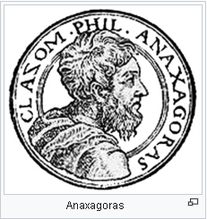

Anaksagoras
Anaksagoras (Grekçe: Ἀναξαγόρας, "meclisin efendisi (İngilizce: lord of the assembly)", MÖ 500[1] - 428), Klazomenai'lı olup, Sokrates öncesi düşünürlerden bir tanesidir. Ana madde ve ilk hareket ettirici neden öğretisi vardır. Küçük Asya'nın Pers İmparatorluğu'nun kontrolünde olduğu bir dönemde Klazomenai'de doğan Anaksagoras, Atina'ya geldi. Diogenes Laërtius ve Plutarch'a göre, daha sonraki yaşamında dinsizlikle suçlandı ve Lampsacus'a sürgüne gitti; Daha sonraki antik biyografi yazarları tarafından uydurulmadıysa, suçlamalar Perikles'le olan ilişkisi nedeniyle siyasi olabilir.[3]
Parmenides'in değişimin imkansızlığına ilişkin iddialarına Anaksagoras yanıt olarak dünyayı, malzeme varyasyonuna hiçbir zaman belirli bir bileşenin mutlak varlığı neden olmadı, bunun yerine diğer bileşenlere göre göreceli üstünlüğü neden oldu; kendi sözleriyle, "her biri ... en açık biçimde içinde en çok olan şeylerdir" şeklinde tanımladı.[4] Nous (Kozmik akıl, Cosmic Mind) kavramını, homojen veya hemen hemen homojen olan orijinal karışımı hareket ettiren ve ayıran bir düzenleyici güç olarak tanıttı.
Ayrıca doğa olayları hakkında bir dizi yeni bilimsel açıklama yaptı. Tutulmalar için doğru bir açıklama yaptı. Güneş'i Mora Yarımadası'ndan daha büyük ateşli bir kütle olarak tanımladı ve gökkuşakları ve göktaşlarını açıklamaya çalıştı.
Hayatı

Doğum yeri olarak bugün Urla yakınında bulunan eski adıyla Klazomenai şehri gösterilir. Bu şehrin soylu ailelerinden birine mensuptur. Anaxagoras'ın, memleketi Klazomenai'de bir miktar zenginlik ve siyasi etkiye sahip olduğuna inanılmaktadır. Ancak sözde, bilgi arayışını engelleyeceği korkusuyla bundan feragat etti.[5] Romalı yazar Valerius Maximus farklı bir geleneği koruyarak;
“ Uzun bir yolculuktan sonra eve dönen Anaksagoras mülkünü harabe halinde buldu ve şöyle dedi: "Eğer bu yok olmasaydı, ben olurdum" „
dediğini rivayet eder - Valerius tarafından "aranan bilgeliğe sahip!" olarak tanımlanan bir cümle.[6][7] Bütün servetini, hayatını adadığı bilimsel araştırmalar uğruna tüketmiş olduğu da rivayet edilir.
Anaxagoras, Pers İmparatorluğu'nun bir Yunan vatandaşıydı ve Pers ordusunda görev yapmıştı; Greko-Pers Savaşları sırasında Yunanistan ana karasına giren Pers alaylarının bir üyesi olabilir.[8] Bu belirsiz kalsa da, "Atina'ya neden MÖ 480/79 yılında Salamis'te geldiğini kesinlikle açıklayacaktır."[8] Anaksagoras Atina'ya yerleşmek için gelen ilk düşünürdür. Böylece Atina felsefe dünyasına girmiştir. Anaksagoras'ın otuz yıl boyunca Atina'da kaldığı söylenir. Burada iyi karşılanmış, dönemin en güçlü kişisi olan Perikles'in dostu olmuştur. Devrin başka bir önemli siması olan tragedya yazarı Evripides'le de dostluk kurmuştur. Şair Euripides ondan bilim ve insanlık için ilham almış, bir heyecan duymuştur.[5]
Anaksagoras, İyonya'dan Atina'ya felsefe ve bilimsel araştırma ruhunu getirdi. Gök cisimleri ve gök taşlarının düşüşü hakkındaki gözlemleri, onu evrensel düzenin yeni teorileri oluşturmaya ve göktaşlarının etkisini tahmin etmeye yönlendirdi. Plutarch[9], "Anaksagoras'ın, gök cisimlerinin bir kayma veya sarsıntı ile gevşetilmesi gerekirse, birinin parçalanabileceğini ve dalıp yeryüzüne düşebileceğini öngördüğü söylenir" diyor. Pliny'ye[10] göre, 467'de göktaşının düşeceğini tahmin etmekle anıldı.[11] MÖ 468 yılında düşen bir gök taşını incelemiş ve onun kızgın bir taş kitlesi olduğu kanaatine varmıştır. Mora Yarımadası (Peloponnese)'ndan daha geniş, yanan bir metal kütlesi olarak tanımladığı gök taşları, tutulmalar, gök kuşakları ve Güneş hakkında bilimsel bir açıklama yapmaya çalıştı; tutulmalar, Güneş ve Ay hakkındaki teorileri, Yunanistan'dan görülebilen MÖ 463 tutulmasının gözlemlerine dayanmış olabilir.[12] Ayrıca Ay'ın dağları olduğunu ve orada yaşandığına inandığını söyledi. Gök cisimlerinin Dünya'dan koparılmış ve hızlı dönüşle tutuşmuş taş yığınları olduğunu ileri sürdü.[5] Tutulmalar hakkında doğru bir açıklama yapan ilk kişiydi ve Güneş'in kırmızı-sıcak bir metal kütlesi olduğu, Ay'ın dünyevi olduğu ve yıldızların ateşli taşlar olduğu iddiaları da dahil olmak üzere bilimsel teorileriyle hem ünlü hem de dile düşmüş biriydi.[13] Dünyanın düz olduğunu ve altındaki 'güçlü' hava tarafından desteklenerek yüzdüğünü ve bu havadaki bozuklukların bazen depremlere neden olduğunu düşünüyordu.[14] Bununla birlikte bu kuramları halkın inançlarına ters düşmüştür. Zira o dönemde güneş Yunanlar için bir tanrıdır ve onu bir taş olarak nitelendirmek büyük saygısızlıktır. Bu spekülasyonlar onu Atina'da asebeia (dinsizlik) suçlamasına karşı savunmasız bırakmıştır. Bu nedenle MÖ 450'de Anaksagoras, Perikles'in siyasi karşıtları tarafından, yerleşik inanca karşı geldiği gerekçesiyle mahkemeye verilmiştir. Diogenes Laërtius, Cleon tarafından dinsizlik nedeniyle yargılandığını anlatır, ancak Plutarch Perikles'in, Atinalılar onu Peloponnesos Savaşından sorumlu tutmaya başladıktan sonra kendi güvenliği için eski öğretmeni Anaksagoras'ı İyonya'da bulunan Lampsakos'a (şimdiki Çanakkale-Lampsakos) gönderdiğini söyler.[15]
Anaksagoras'a yöneltilen suçlamalar, bir güneş veya ay tanrısının varlığını inkar etmesinden kaynaklanmış olabilir.[16] Laërtius'a göre Perikles, yaklaşık 450'de duruşmasında Anaksagoras'ı savunmak için konuştu[17] Öyle bile olsa Anaksagoras, Atina'dan Troad'daki Lampsacus'a emekli olmak zorunda kaldı (yaklaşık 434 - 433). Orada yaklaşık 428 yılında öldü. Lampsacus Vatandaşları Lampsakos agorasına onun anısına Akıl ve Gerçeğe bir sunak dikti ve öğrencilerin onun ölüm yıl dönümlerinde anma törenleri düzenledikleri söylenir. Mezarının üzerine şu yazıyı koydular: Burada, hakikat arayışında cennetin kendisini ölçeklendiren Anaksagoras dinlenmeye yatırıldı.[a]
Anaksagoras bir felsefe kitabı yazdı, ancak MS 6. yüzyılda Kilikyalı Simplicius'unun çalışmalarında koruma yoluyla bunun sadece ilk bölümünün parçaları günümüze ulaştı.
Kaynakça
- Tam adı: Anaksagoras
- Doğumu: Ἀναξαγόρας
y. 500 MÖ[1]
Klazomenai, İyonya, Pers İmparatorluğu
- Ölümü: y. 428 MÖ
Lapseki
- Çağı: Antik Çağ felsefesi
- Bölgesi: Batı felsefesi
- Okulu: Çoğulculuk Okulu
- İlgi alanları: Doğa felsefesi
- Önemli fikirleri: Kozmik Akıl (Nous) her şeyi sıralamak
Uzaktaki yıldızların bir konsantrasyonu olarak Samanyolu (Via Lactea)[2]